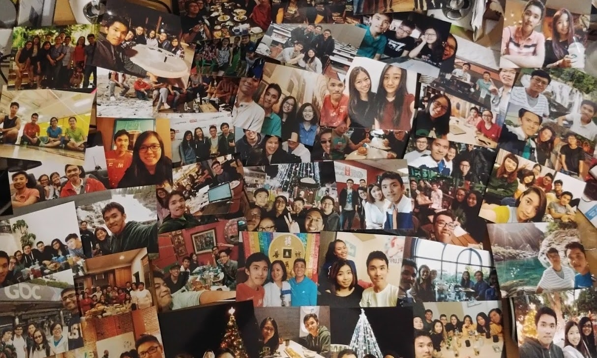
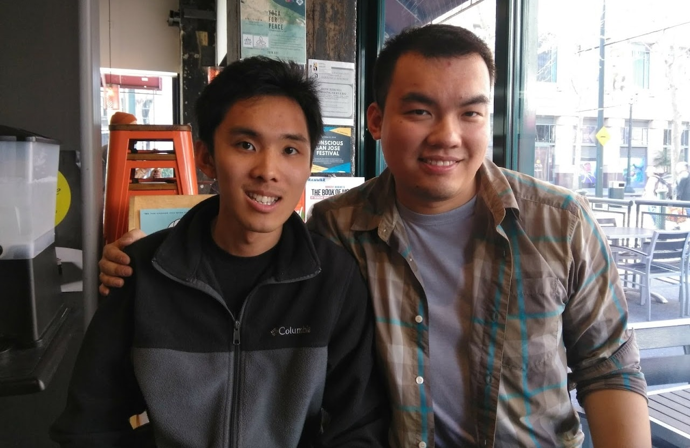

Last modified: Wed May 30 2018 22:16:25 GMT+0800 (Malay Peninsula Standard Time)
Types of People I Met
I met many people during the four years period. It was usually within the group in the field of what I studied and expend it outwards. There are good and bad. Here is a list of people I met:
The Goods
People that who...
- always offer help when you begin to struggle on certain topic
- always catch up with you no matter how busy they are
- share their experience with you to make sure you will gain something from it
- give or lend you something ASAP that you need
- never leave you behind :)
- help out whatever you need
- always remind you to do something
The Bads
People that who ...
- does not get stuff done and you have to keep on reminding him
- always late all the time, even if the meeting is at 12pm, you have to give a call and wake the person up
- party all night and unable to wake up as promised to get stuff done
- always spend money on party but refused to pitch in to his on group project
- never read or respond the text messages and pretend nothing is going on so do not need to get the stuff done
- has two faces; treat opposite sex with extremely good attitude
- always collaborate on their schedule
- only talk to you to get your help but long gone after you give out the things
- always spend their time on party and say they do not have time
- only show up to the conversation if it is related to the homework topic in the group chat, but not others
- always say they are poor but able to afford expensive stuff all the time
- try to show off (negative attitude)
- does not have knowledge but refuse to listen
- refused to collaborate with other people in terms of schedule/time
- always says want to hangout, but never have time
There may be more in the list. But there is a general list of people I can see by joining them. I won't say the bads are always the bad as they might not be the best person for school, but may be good for other things. Sometimes, the bads will always be the bads when everyone start to talk about it.
My (Closer) Friends
I told my friends that I planned to document my college life. For those who I talked to before I started, they asked me to include them in it. Here you go! But for those who did not know about it, here is the surprise! People below may fall into the bads list mentioned above too! There is no order how it is mentioned. If are the mentioned below and dislike it, contact me and I will take it down :) Also, if you are not in the list below, it was either I planned to find a better picture with you from my phone, I completely forgot, or we do not have a picture together at all. :(

No name will be mentioned. Instead, I will just write about you? It will goes from left to right.
PS. I cropped the picture to save bandwidth.
- Her mom makes good egg rolls, but I have not tried it still. She loves tiny phone.
- The one that put a turbo in his cars? He has a project car
- The one that dates L&L and broke his phone (firmware) after owning it for a month?
- Never stop studying? How come you are still not bored of school?
- The craw machine expert? I thought you are supposed to teach me how to play the craw machine?
- The Taco Bell lovers. She had her first ramen with me and another friend someday last year. Don't be surprised that she is an Asian too.
- The only few people that play the stock by himself, read and follow the news, and make money!
- My Malaysian's Buddy that always complain that I sing an opposite tune :(
- The guy that jokes more than me
- The only male friend that has long hair. How long does it take for you to wash it?
- The quietest guy I have ever met
- He always look mad no matter where he is.
- The one that always drop her phone and crack her screen. That is more like her weekly routine?
- The one that made and brought me dessert to fill my hunger after my graduation ceremony and I love it.
- The only Malaysian friend (but US Citizen) that I know that can make Malaysian curry from scratch
- The guy that probably the best at comforting people
- The Math major that always does math non-stop. She even broke her X and Z (keyboard keys)!
- The first Belize friend that I met. Belize (a country) does not have any chain restaurant! I feel bad for you :(
- The guy that look mad always?
- Her favorite plant is cactus :)
- The guy that used LEGO to build a case for school project but the lecturer hated it!
- Mentioned before
- The only girl that I met study Electrical Engineering
- The only girl that I know skate (skateboard) to school
- The EE guy that always travel with his girlfriend to everywhere
- skip
- Thanks for giving away the love letters (snack) to us!
- Her favorite food is Taco Bell? She always say I judge her, but I am not :(
- The guy that has a backup laptop in the school locker owns a Miata that has the color matches his bike, water bottle, phone, etc.
- The guy that used to care about his grade and wanted to get an A for everything, but not recently.
- The guy that dates MIA (Missing In Action).
- The girl that hates technology. Technology is complicated for her. She was born at the wrong time.
- The guy that has so much power tool that he can build anything he want in his own garage!
- The girl that loves Tsum Tsum and has a huge collection of it.
- The second math major that I met!

- The one that has one windows laptop for school and one MacBook for watching TVB/Korean drama.
- Mentioned before
- Mentioned before
- Mentioned before
- The guy that love terminal window and tea to the max. Probably the only white guy that I know that love tea and own proper chinese tea set.
- Mentioned before
- Mentioned before
- Mentioned before
- Mentioned before
- The guy that can solves almost all the questions that he received!
- The guy that moved around the California several times.
- The only person that I know that was in Game Dev Club in the school. Thanks for inviting me to GDC 2016!
- The girl that loves and one Nexus smartphone!
- The guy that I love to go Hackathon with! And me and him can get stuff done quickly!

- You used to look so slim. I hope you enjoy looking at this picture :)
- My first classmate in the college!
- Finally, you are wearing a glasses!
- For her, there is only two categories of food: edible and non edible